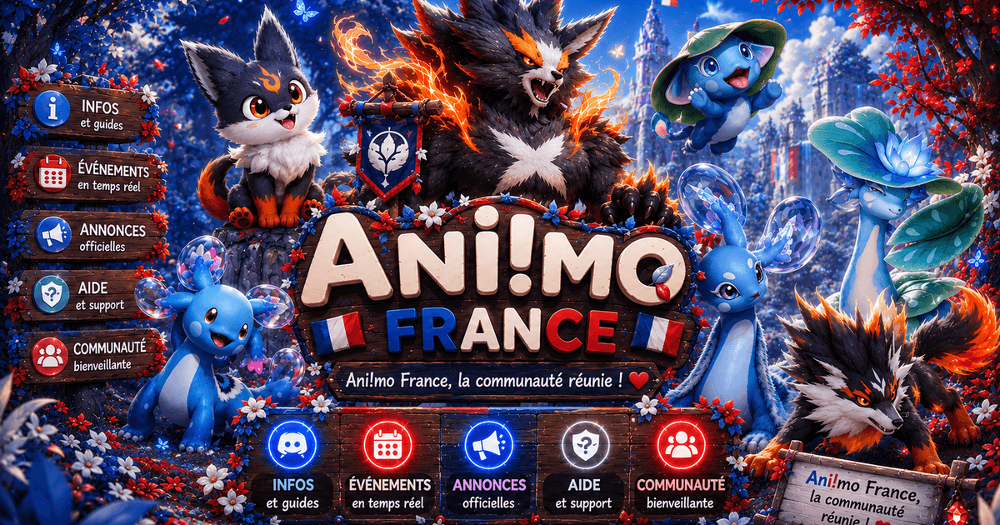

Le Discord de la communauté française d'Aniimo
Entraide, guides en français, événements et coéquipiers : tout ce qu'il faut pour vivre l'aventure d'Idyll ensemble, de la bêta jusqu'au lancement.
Invitation directe : discord.gg/aniimofr — gratuit et ouvert à tous

Pourquoi rejoindre Aniimo France ?
Un seul objectif : réunir toute la communauté francophone d'Aniimo au même endroit.
Entraide & guides FR
Des guides rédigés en français, des astuces de capture et des réponses à toutes vos questions sur le jeu.
Événements & concours
Animations communautaires, concours et soirées jeux pour faire vivre le serveur avant et après la sortie.
Actus traduites
Toute l'actualité d'Aniimo (annonces, bêtas, patch notes) relayée et traduite en français dès sa publication.
Coéquipiers coop
Des salons dédiés pour trouver des joueurs francophones et explorer Idyll en coopération.
Aniimo, c'est quoi ?
Le prochain grand jeu de capture de créatures.
Aniimo est un RPG free-to-play en monde ouvert de capture de créatures, développé par Pawprint Studio et édité par Kingsglory. Vous y incarnez un Éclaireur qui explore le continent d'Idyll, tisse des liens avec des créatures appelées Aniimo grâce au système de Tissage (Twine), et peut même prendre le contrôle de ses créatures pour explorer, nager, voler et combattre autrement.
Le jeu est attendu en 2026 sur PC (Steam, Epic Games Store), PlayStation, Xbox et mobile (iOS, Android), jouable en solo comme en coopération en ligne.
Explorer Aniimo France
Le site grandit avec la communauté — découvrez les premières sections.
📋 Patch notes en français
Toutes les mises à jour d'Aniimo traduites, résumées et archivées : équilibrages, nouveautés, corrections — consultables à tout moment.
Bêta📖 Aniimopédia FR
Une base de données communautaire des créatures : attributs, évolutions, localisations et stratégies, le tout en français.
Questions fréquentes
Tout ce qu'il faut savoir sur le serveur Discord Aniimo FR.
Comment rejoindre le Discord Aniimo France ?
Cliquez simplement sur le lien d'invitation discord.gg/aniimofr depuis votre navigateur ou l'application Discord. L'accès est gratuit et ouvert à tous les joueurs francophones.
Le serveur Aniimo France est-il officiel ?
Non, Aniimo France est un serveur communautaire créé par des fans. Il n'est affilié ni à Pawprint Studio ni à Kingsglory. C'est un espace d'entraide et de partage entre joueurs francophones.
Le Discord est-il déjà actif avant la sortie du jeu ?
Oui ! Le serveur est déjà en place : on y suit les annonces et les bêtas, on partage les découvertes et on se prépare ensemble au lancement d'Aniimo.
Que trouve-t-on sur le serveur ?
De l'entraide entre joueurs, des guides en français, l'actualité du jeu traduite, des événements communautaires, des concours et des salons pour trouver des coéquipiers en coopération.
Sur quelles plateformes Aniimo sera-t-il disponible ?
Aniimo est annoncé sur PC (Steam et Epic Games Store), PlayStation, Xbox ainsi que sur mobile (iOS et Android), en free-to-play.
Prêt à explorer Idyll avec nous ?
La communauté française d'Aniimo vous attend. Une seule adresse à retenir.
Rejoindre discord.gg/aniimofr